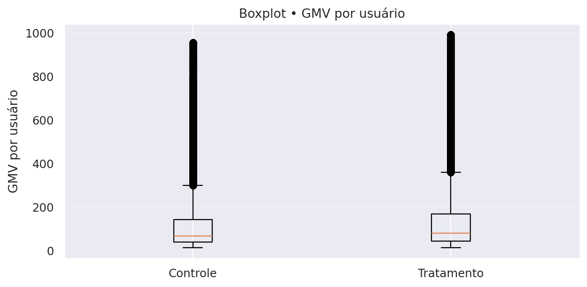

Relatório Final – Case iFood: Teste A/B de Cupons
1. Contexto
O iFood testou uma campanha de cupons com um grupo de usuários selecionados (grupo teste), enquanto outro grupo similar não recebeu o benefício (grupo controle).
O objetivo do experimento foi avaliar se o cupom aumentaria o engajamento e o gasto dos usuários, além de verificar a viabilidade financeira da iniciativa.
Glossário
- Mediana: valor típico por cliente (menos sensível a casos extremos).
- p95: nível alto esperado (apenas ~5% dos clientes ficam acima disso).
- Heavy users (≥3): parcela de clientes frequentes.
2. Principais Resultados da Campanha
2.1 Engajamento e Vendas
Tabela 1 – Sumário por grupo (medianas, p95 e heavy users).
| Grupo | Usuários | Mediana GMV | Mediana pedidos | Mediana AOV | p95 GMV | p95 pedidos | p95 AOV | % Heavy Users (≥3) |
|---|---|---|---|---|---|---|---|---|
| Sem Cupom | 357261 | 66.2 | 1 | 40.85 | 457.40 | 9 | 100.6 | 30.71% |
| Com Cupom | 442676 | 79.8 | 2 | 41.00 | 507.19 | 10 | 99.80 | 36.93% |
- Pedidos por usuário: aumento de +100% no grupo que recebeu o cupom.
- GMV por usuário (valor gasto no app): crescimento de +20% com o cupom.
- Ticket médio (AOV): permaneceu estável, em torno de R$100 por pedido.
- Heavy users (≥3 pedidos no período): cresceram de 31% para 37% com o cupom.
Figura 1 – Medianas por grupo (GMV, Pedidos, AOV).

Figura 2 – Distribuição de pedidos por usuário (controle vs tratamento).

Figura 3 – Boxplots (robustos a outliers) por grupo.
a) GMV por usuário

b) Pedidos por usuário

c) AOV por usuário

Interpretação:
O cupom não aumentou o valor de cada pedido, mas levou os usuários a pedirem com mais frequência, elevando o gasto total.
Isso reforça o cupom como alavanca de engajamento e hábito de consumo, e não como impulsionador de ticket médio.
2.2 Sustentabilidade Financeira
Premissas adotadas:
- Valor do cupom: R$10, pago pelo iFood.
- Taxa de uso do cupom: 30%.
- Comissão média do iFood (take rate): 23% sobre o valor dos pedidos.
- Receita incremental total (comissões adicionais): R$1,74 milhão.
- Custo total dos cupons concedidos: R$1,33 milhão.
- Lucro incremental total (receita − custo): R$416 mil.
- Lucro incremental por usuário tratado: R$0,94.
- LTV (valor estimado de longo prazo por cliente): R$34,6.
- CAC (custo de aquisição via cupom): R$10.
- Relação LTV/CAC: 3,5 → saudável.
- ROI (%) ≈ 31,35%
Tabela 2 – Indicadores financeiros (base).
| Métrica | Valor |
|---|---|
| Receita incremental total | R$1,74 milhão |
| Custo total dos cupons | R$1,33 milhão |
| Lucro incremental total | R$416 mil |
| Lucro incremental por usuário | R$0,94 |
| LTV | R$34,6 |
| CAC | R$10 |
| LTV/CAC | 3,5 |
| ROI (%) | 31,35% |
Nota sobre o LTV:
O cálculo do LTV (Lifetime Value) é normalmente utilizado em horizontes mais longos, acompanhando a evolução do cliente ao longo de vários meses ou anos. No nosso caso, os dados disponíveis cobrem apenas o período do experimento, de modo que o LTV foi aqui estimado a partir desse intervalo restrito.
Mesmo assim, a métrica foi incluída porque oferece uma boa referência de potencial de retorno por cliente e permite compará-lo com o CAC. Ou seja, ainda que a estimativa seja mais conservadora e não capture todo o ciclo de vida real do cliente, ela ajuda a reforçar a análise de viabilidade financeira no contexto deste case.
Interpretação:
O investimento em cupons trouxe retorno positivo para o iFood.
Cada real gasto com cupons gerou aproximadamente R$3,50 de valor de cliente a longo prazo, indicando uma estratégia financeiramente sustentável.
2.3. Conclusões
- A campanha de cupons foi bem-sucedida em aumentar a frequência de pedidos e o GMV por usuário.
- O ticket médio permaneceu estável, mas o maior engajamento levou a uma receita incremental relevante.
- Financeiramente, a ação se mostrou viável e sustentável, com ROI positivo e excelente relação LTV/CAC.
- O cupom deve ser entendido como uma alavanca de engajamento e recorrência, mais do que de aumento de ticket médio.
2.4. Recomendações e Nova Proposta de Teste A/B
Os resultados da análise mostraram que os cupons, da forma como foram aplicados, aumentaram o número de pedidos e o GMV, mas não alteraram o valor médio por pedido (AOV). Além disso, observamos que até usuários com alto engajamento (heavy users) utilizaram os cupons, o que reduz a eficiência da campanha.
Diante disso, recomendamos ajustes na estratégia antes de repetir a ação:
1. Segmentação mais inteligente
- Evitar heavy users: clientes que já compram frequentemente tendem a usar o cupom, mas não aumentam seu gasto médio. Assim, o investimento não gera valor incremental.
- Foco em clientes inativos ou de baixa frequência: direcionar cupons a esse grupo pode aumentar a base ativa e gerar maior retorno sobre o investimento.
2. Diferenciar o tipo de cupom
- Cupom com gasto mínimo: exemplo, "R$10 de desconto para compras acima de R$40”. Esse modelo incentiva aumento do ticket médio, combatendo o resultado neutro que vimos no AOV.
- Frete grátis: alternativa que pode ser mais atrativa em alguns perfis de consumidores e incentivar novas compras.
3. Nova proposta de teste A/B
Para validar essas hipóteses, sugere-se um desenho de experimento com três grupos:
- Grupo Controle: sem cupom.
- Grupo 1: cupom fixo de $10 com gasto mínimo de R$40.
- Grupo 2: cupom de frete grátis com gasto mínimo de R$30.
Público-alvo do teste: clientes inativos ou de baixa frequência.
4. Métricas de avaliação
- Pedidos por usuário (engajamento).
- GMV incremental (crescimento de receita).
- ROI da campanha (retorno financeiro líquido).
- Taxa de reativação (quantos clientes voltaram a comprar).
Com essa abordagem, será possível avaliar se os cupons funcionam não apenas como incentivo imediato, mas também como alavanca de crescimento sustentável para o negócio.
3. Segmentação de usuários
3.1. Critérios de segmentação e racional
Objetivo. Agrupar clientes com comportamentos semelhantes para direcionar benefício, mensagem e canal, aumentando engajamento/retenção e otimizando custo de cupom.
Critérios utilizados:
- Frequência (Heavy user):
- Definição: heavy (≥ 3 pedidos no período) vs não-heavy (< 3).
- Racional: frequência é um preditor direto de valor; separar quem já tem hábito de compra de quem ainda está “em formação”.
- Plataforma de origem: Android, iOS e Desktop.
- Racional: o comportamento por dispositivo/canal difere (tamanho do ticket, fricção de checkout, jornada).
- RFM (Recency–Frequency–Monetary): códigos 111–555 (1=baixo, 5=alto em cada eixo).
- Racional: permite distinguir desde “recente-pouco-baixo ticket” (ex.: 111) até “recente-muito-alto ticket” (ex.: 555) para graduar o incentivo.
- Novo vs recorrente: sinalizamos novo quando disponível, porém, na base utilizada, o volume de “novo” é residual (amostra focada em quem já comprou). Mantemos como exploratório até incorporar usuários que ainda não pediram (para medir 1ª compra de fato).
Inserir figuras de referência (médias para visão geral e box/hist para forma da distribuição):
-
Barras – médias por segmento:
- [INSERIR FIGURA:
outputs/figs_segments/bars_heavy.png] - [INSERIR FIGURA:
outputs/figs_segments/bars_new.png] - [INSERIR FIGURA:
outputs/figs_segments/bars_platform.png]
- [INSERIR FIGURA:
-
Boxplots – heavy_user (com e sem winsor 1%):
- [INSERIR FIGURA:
outputs/figs_segments/box_heavy.png] - [INSERIR FIGURA:
outputs/figs_segments/box_heavy_w.png]
- [INSERIR FIGURA:
-
Histogramas – por segmento (exploratório):
- [INSERIR FIGURA:
outputs/figs_segments/hist_new.png] - [INSERIR FIGURA:
outputs/figs_segments/hist_platform.png]
- [INSERIR FIGURA:
3.2. Resultados do A/B por segmento e recomendações
1) Frequência (Heavy vs Não-heavy)
Tabela 3 – Medianas por segmento (Heavy vs Não-heavy)
| Segmento | Usuários (Trat.) | GMV mediano (Ctrl → Trat) | Δ GMV | Pedidos medianos (Ctrl → Trat) | Δ Pedidos |
|---|---|---|---|---|---|
| Não-heavy | 34.929 | 47,00 → 50,00 | +3,00 | 1 → 1 | 0 |
| Heavy | 20.439 | 205,60 → 208,20 | +2,60 | 5 → 5 | 0 |
Figura 4 - Mediana GMV/AOV/Pedidos por usuário (Heavy vs Não-heavy)
a) GMV por usuário

b) AOV por usuário

c) Pedidos por usuário

- Não-heavy: ganho claro em GMV/usuário e pedidos/usuário com o cupom; AOV estável.
- Heavy: efeito marginal (quase nulo) dentro do grupo.
- O grupo tratado tem mais heavy users (~37% vs ~31%), o que também puxa a média geral para cima (efeito de composição).
- Ações sugeridas:
- Direcionar o cupom em não-heavy (1–2 pedidos) para conduzir ao 2º→3º pedido.
- Reduzir frequência/valor do cupom para heavy (≥ 3) para evitar canibalização.
- KPI alvo: aumento da taxa de heavy users (≥ 3) e do GMV mediano entre não-heavy, com AOV estável.
2) Plataforma (Android / iOS / Desktop)
Tabela 4 – Medianas por segmento (Plataforma)
| Plataforma | Usuários (Trat.) | GMV mediano (Ctrl → Trat) | Δ GMV | Pedidos medianos (Ctrl → Trat) | Δ Pedidos |
|---|---|---|---|---|---|
| Android | 23.632 | 59,00 → 69,80 | +10,80 | 1 → 2 | +1 |
| Desktop | 7.939 | 63,20 → 73,60 | +10,40 | 1 → 2 | +1 |
| iOS | 23.336 | 77,80 → 94,00 | +16,20 | 1 → 2 | +1 |
Figura 5 - Mediana GMV/AOV/Pedidos por usuário (Plataforma)
a) GMV por usuário

b) AOV por usuário

c) Pedidos por usuário

Figura 6 - Heavy Users por Plataforma
- Desktop e iOS respondem melhor (maior ganho por usuário); Android responde, mas com retorno menor.
- Em mediana, Android e Desktop avançam de 1→2 pedidos; iOS aumenta GMV mediano.
- Ações sugeridas:
- Priorizar campanhas em Desktop e iOS (melhor retorno).
- Em Android, testar cupom menor ou gatilhos mais precisos (ex.: ofertar no 2º carrinho ou após período sem compra), para elevar eficiência.
- KPI alvo: ROI por usuário do segmento ≥ 0 e crescimento do p95 sem queda de AOV.
3) RFM (111–555)
Tabela 5 – RFM (Top 5 por população do Tratado)
| RFM | Usuários (Trat.) | GMV mediano (Ctrl → Trat) | Δ GMV | Pedidos medianos (Ctrl → Trat) | Δ Pedidos |
|---|---|---|---|---|---|
| 555 | 5.391 | 409,3 → 415,2 | +5,9 | 9 → 9 | 0 |
| 111 | 3.192 | 25,2 → 25,9 | +0,7 | 1 → 1 | 0 |
| 112 | 2.904 | 44,0 → 44,5 | +0,5 | 1 → 1 | 0 |
| 211 | 2.310 | 25,1 → 25,0 | −0,1 | 1 → 1 | 0 |
| 455 | 2.054 | 343,6 → 332,8 | −10,8 | 7 → 7 | 0 |
- Dentro de cada célula RFM, o ganho tende a ser pequeno; o aumento global vem da maior participação de células de alto valor no grupo tratado (mix).
- Ações sugeridas:
- Baixo RFM (11*, 21*, 31*): cupom mais agressivo para gerar 2º e 3º pedidos.
- Médio RFM (4*4, 45*): cupom moderado, orientado a frequência.
- Alto RFM (54*, 55*): cupom baixo/ocasional, evitando gastos onde ganhos já existem.
- KPI alvo: progressão de faixas (ex.: 11*→12*/13*; 2*→3*), aumento de frequência mediana nas faixas baixas.
4) Novo vs Recorrente (limitação atual)
Tabela 6 – Medianas (Novo vs Recorrente)
| Segmento | Usuários (Trat.) | GMV mediano (Ctrl → Trat) | Δ GMV | Pedidos medianos (Ctrl → Trat) | Δ Pedidos |
|---|---|---|---|---|---|
| Recorrente | 55.348 | 66,00 → 79,60 | +13,60 | 1 → 2 | +1 |
- O que vimos: o sinal de “novo” é residual na amostra (quase todos já compraram anteriormente), então a “conversão=1,0” é espúria.
- O que fazer: incluir usuários sem pedido na base de teste (grupo de controle e tratado) para medir 1ª compra; só então definir política específica para “novos”.
3.3. Próximos passos de produto (teste direcionado)
- Teste A/B estratificado por heavy_user e plataforma, com valor de cupom variável (ex.: Android R$6–8; iOS/Desktop R$10–12).
- Gatilho de progressão para não-heavy (ofertar após o 1º ou 2º pedido, ou após X dias sem compra).
- Métricas de sucesso:
- Primárias: GMV mediano por usuário e taxa de heavy users, por segmento.
- Financeiras: Lucro incremental total e ROI(%) por segmento.
- Guardrails: manter AOV estável e não aumentar cancelamentos.